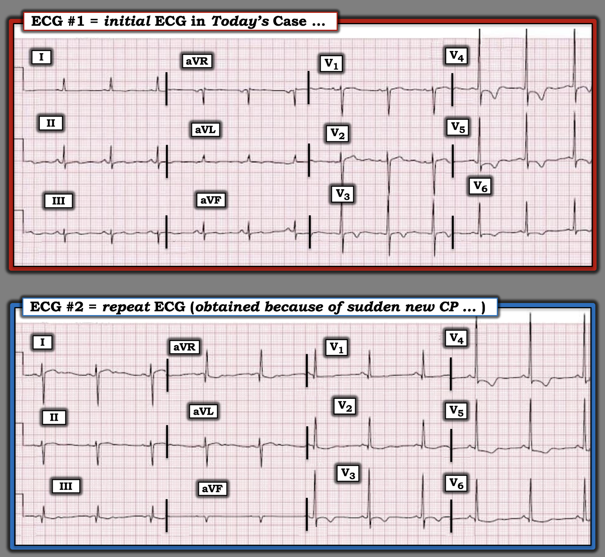
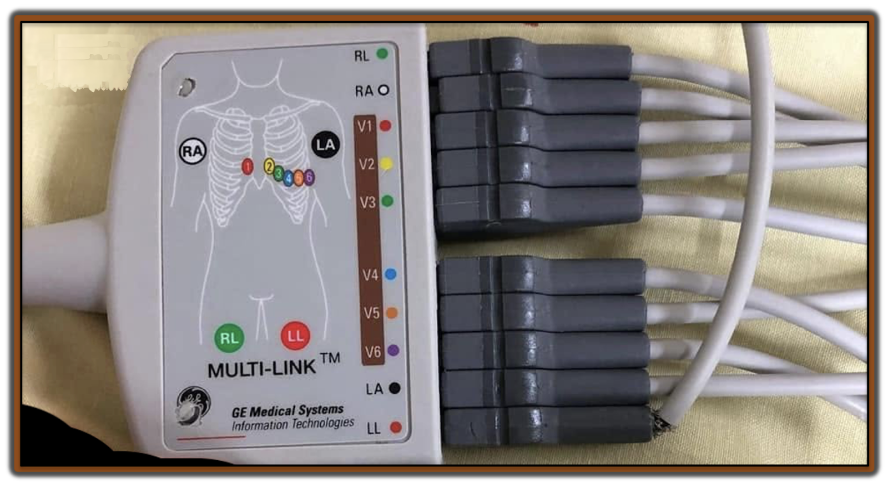

ECG Blog #552 — Các điện cực KHÔNG hề bị đặt sai!
2 điện tâm đồ trong Hình 1 được ghi từ cùng một bệnh nhân. Bệnh nhân nhập viện để đánh giá đau bụng. Điện tâm đồ ghi lại được ghi sau khi nhập viện vì bệnh nhân đột ngột xuất hiện CP (đau ngực – Chest Pain).
CÂU HỎI:
- Làm sao 2 điện tâm đồ này lại có thể là của cùng một bệnh nhân?
- LƯU Ý: Tất cả các điện cực đều được đặt đúng vị trí trên các chi và ngực của bệnh nhân (vì vậy sự thay đổi hình dạng mà chúng ta thấy trên điện tâm đồ #2 không phải là hậu quả của đảo điện cực).


===============================
Điện tâm đồ ban đầu trong Hình 1 ...
Điện tâm đồ lúc nhập viện của bệnh nhân ( = điện tâm đồ #1) không phải là một bản ghi bình thường.
- Nhịp trên điện tâm đồ #1 là nhịp xoang với tần số ~70/phút. Tất cả các khoảng (PR, QRS, QTc) và trục mặt phẳng trán đều bình thường.
- Giả sử bệnh nhân trên 35 tuổi — nhiều khả năng có LVH (sóng S sâu nhất ở V2 + sóng R cao nhất ở V5 gần đạt tiêu chuẩn 35 mm, kèm sóng R ở V4 cực kỳ cao).
- Đoạn ST có dạng vòm (coving) ở V3 đến V6, kèm ST chênh xuống nhẹ và sóng T đảo ngược đối xứng. Có sóng ST-T dẹt không đặc hiệu ở các chuyển đạo chi.
- Nhận định: Nhịp xoang, nhiều khả năng LVH + ST dạng vòm và sóng T đảo ngược ở V3 đến V6, phù hợp với "tăng gánh" thất trái (LV strain) và/hoặc thiếu máu cục bộ. Cần đối chiếu lâm sàng (và lý tưởng nhất là tìm được một bản ghi trước đó để so sánh).
Điện tâm đồ ghi lại trong Hình 1 ...
Ấn tượng thứ 1 của tôi khi nhìn thấy điện tâm đồ ghi lại là: "Thật kỳ quái!".
- Tôi tự hỏi đã bao nhiêu thời gian trôi qua giữa lúc ghi điện tâm đồ #1 và điện tâm đồ #2?
- Nhìn hai bản ghi đặt cạnh nhau trong Hình 1 — sự khác biệt giữa 2 điện tâm đồ này thật nổi bật! Không chỉ biên độ QRS tăng lên trên điện tâm đồ ghi lại — mà trục mặt phẳng trán còn lệch hẳn sang phải, và QRS giờ đây chủ yếu dương ở V1 (trong khi trên điện tâm đồ ban đầu — QRS ở V1 chủ yếu âm).
- Đây không phải là hậu quả của một rối loạn dẫn truyền — vì QRS không giãn rộng như trong RBBB hay IVCD.
- Vì chuyển đạo I và V6 đều là các chuyển đạo phía trái — bình thường 2 chuyển đạo này có phần giống nhau. Thế nhưng giờ đây chuyển đạo I chủ yếu âm — còn các chuyển đạo trước tim phía trái V4, V5, V6 đều dương rõ rệt.
- Vậy mà bất chấp sự thay đổi kỳ quái và dữ dội về hình dạng QRST giữa 2 bản ghi trong Hình 1 ở cả chuyển đạo chi lẫn chuyển đạo trước tim — chúng ta được cho biết rằng tất cả các điện cực đều được đặt đúng vị trí trên các chi và ngực của bệnh nhân (vì vậy sự thay đổi hình dạng mà chúng ta thấy trên điện tâm đồ #2 không phải là hậu quả của đảo điện cực).
Làm sao lại có thể như vậy?
- Suy nghĩ "ra ngoài khuôn khổ" và nhớ lại rằng lý do ghi điện tâm đồ #2 là bệnh nhân đột ngột đau ngực — tôi nghĩ đến các biến cố sinh lý có thể gây đau ngực, và đã được biết là có thể tạo ra những thay đổi kỳ quái về tư thế giải phẫu tương đối của tim (tức là tràn khí màng phổi khởi phát đột ngột — hoặc vì bệnh nhân này nhập viện do đau bụng, có thể là thủng ruột?).
- HOẶC — Liệu đây vẫn có thể bằng cách nào đó là biểu hiện của một sự cố kỹ thuật (technical misadventure)?
- ĐIỂM THEN CHỐT (PEARL) #1: Nếu một kiểu “tráo điện cực” nào đó hóa ra là nguyên nhân của sự thay đổi hình dạng kỳ quái giữa 2 bản ghi trong Hình 1 — thì đó không thể là một sự tráo đổi đơn thuần các điện cực chi. Lý do là việc đặt lẫn điện cực chi sẽ không ảnh hưởng tới các chuyển đạo trước tim — vốn giờ đây cho thấy sóng R ưu thế ở V1 rất bất thường và bất ngờ.
- Thay vào đó — bất kỳ kiểu lẫn điện cực nào gây ra sự thay đổi đột ngột mà chúng ta thấy giữa 2 bản ghi trong Hình 1 đều phải liên quan tới việc đặt sai (hoặc nối sai) điện cực của cả (các) chuyển đạo chi lẫn (các) chuyển đạo trước tim.
===============================
KẾT LUẬN CA BỆNH:
- 2 lần định lượng troponin độ nhạy cao (hs-troponin) đều âm tính — và một điện tâm đồ ghi lại khác trông giống hệt điện tâm đồ #2. Siêu âm tim tại giường bình thường, không có rối loạn vận động thành ==> sự khác biệt giữa điện tâm đồ #1 và điện tâm đồ #2 không phải là hậu quả của nhồi máu cấp.
- Cả hai điện tâm đồ đúng là của cùng một bệnh nhân.
- Đã xác minh 4 điện cực chi đều được đặt đúng chi.
- 6 điện cực chuyển đạo trước tim đều được đặt đúng vị trí trên ngực.
Lời giải:
Các đầu nối chuyển đạo đã bị cắm sai ở hộp nối cáp (cable hub) ...
- Dây cáp nối của chuyển đạo đơn cực V1 và của điện cực LL (chân trái – Left Leg) đã bị tráo cho nhau.
- Như minh họa trong Hình 2 — dễ hiểu vì sao sự cố kỹ thuật nối nhầm cáp V1 và cáp LL có thể xảy ra, vì cả hai cáp đều được mã hóa bằng màu ĐỎ.
- Hóa ra các đầu nối cáp đã bị rút ra khi dọn phòng — rồi bị cắm nhầm khi nối cáp lại.


===============================
Bàn luận:
Các sự cố kỹ thuật do đặt sai (hoặc nối sai) điện cực chuyển đạo chi và/hoặc chuyển đạo trước tim — thường gặp đến bất ngờ trong thực hành, với tần suất ước tính từ 0.4 đến 4.0% tổng số điện tâm đồ được ghi (Sukumaran và Selvaraj — Indian Pacing Electrophysiol J 24(2):119-121, 2024 - và - Rudiger và cs. — Am J Emerg Med 25:174-178, 2007).
- Hậu quả tiềm tàng của lỗi đặt sai (hoặc nối sai) điện cực là hiển nhiên — bao gồm chẩn đoán quá mức và/hoặc bỏ sót tắc mạch vành cấp.
- Dạng đặt sai vị trí điện cực (hay đảo điện cực) thường gặp nhất — là lẫn 2 trong 4 điện cực chi. Cho đến nay, kiểu đảo điện cực hay gặp nhất là lẫn điện cực LA (tay trái – Left Arm) và RA (tay phải – Right Arm) — nhưng mọi tổ hợp đảo điện cực đều có thể xảy ra (Xem ECG Blog #479 — để có danh sách ngày càng dài các kiểu đảo điện cực và các sự cố kỹ thuật khác).
- ĐIỂM THEN CHỐT (PEARL) #2: Đảo bất kỳ 2 trong 4 điện cực chi thường dễ nhận ra khi bạn đã quen với các khả năng có thể xảy ra — vì chúng thường tạo ra các hình ảnh đặc trưng (như được mô tả chi tiết trong ECG Blog #479).
- Ngược lại — lẫn giữa điện cực chi và một hoặc nhiều điện cực chuyển đạo trước tim thường mang tính riêng biệt, tạo ra các thay đổi điện tâm đồ không thể đoán trước, khiến việc nhận diện trên điện tâm đồ trở nên phức tạp (như trong ca hôm nay! ). Lý do là cực trung tâm Wilson (Wilson Central Terminal) bị thay đổi khi có sự lẫn giữa điện cực chi và điện cực chuyển đạo trước tim.
- Các máy điện tâm đồ đang dùng trên khắp thế giới rất khác nhau. Vì vậy — các kiểu nối ở hộp nối cáp không theo "chuẩn" chung. May mắn là — phần lớn máy điện tâm đồ hiện đại có một dây cáp duy nhất nối tất cả điện cực vào máy. Nhưng một số máy có 2 dây cáp riêng biệt, tạo thêm cơ hội nối nhầm điện cực (như thấy trong Hình 2).
Tôi thấy bài viết của Paul và Jacob đầy đủ đến kinh ngạc khi trình bày chi tiết rất nhiều khả năng đặt sai điện cực chuyển đạo chi và chuyển đạo trước tim (Ind Pacing Electrophysiol 23(6):205-213, 2023).
- ĐIỂM THEN CHỐT (PEARL) #3: Hãy nhận thức rằng dù không thường gặp — sự lẫn đồng thời giữa điện cực chi và điện cực chuyển đạo trước tim có thể xảy ra, và khi đó — điện tâm đồ thu được có thể trông kỳ quái, với hình dạng không thể giải thích được theo các quy luật sinh lý. Biên độ điện thế có thể tăng hoặc giảm rất nhiều ở nhiều chuyển đạo khác nhau — và có thể thấy những sai lệch ST-T không thể đoán trước (chênh lên hoặc chênh xuống).
- Hãy nghi ngờ một dạng sự cố kỹ thuật bất thường nào đó khi bạn gặp một bản ghi kỳ quái như vậy ở một bệnh nhân mà bệnh sử lâm sàng không phù hợp với bất kỳ tình trạng nào có khả năng gây ra những thay đổi như thế (tức là X-quang ngực (CxR) bình thường và siêu âm tim bình thường — nhất là khi sau khi đã kiểm tra vị trí điện cực và ghi lại điện tâm đồ, vẫn thấy những dấu hiệu kỳ quái y như cũ).
- Đừng quên thêm việc kiểm tra các đầu nối ở hộp nối cáp vào bảng kiểm!
ĐIỂM THEN CHỐT (PEARL) #4: Tôi xin khép lại bằng việc giới thiệu tài liệu nhập môn của Lub Dub Admin — điểm lại những điều cốt yếu về cáp điện tâm đồ, bao gồm các loại cáp, đầu nối, cấu hình chuyển đạo và tính tương thích (Hình 4).
- Tài liệu nhập môn này giúp hiểu rõ rất nhiều cách mà các thành phần kỹ thuật cấu tạo nên một máy điện tâm đồ có thể khác nhau. Không phải máy điện tâm đồ nào cũng được chế tạo giống nhau. Khi gặp một điện tâm đồ trông thật sự kỳ quái, không tuân theo các hình ảnh thường gặp và có thể đoán trước của đảo điện cực — chúng ta cần đội “mũ thám tử” lên và tìm kiếm những dạng sự cố kỹ thuật bất thường.

==================================
Lời cảm ơn: Xin cảm ơn 林柏志 (từ Đài Loan) đã cung cấp ca bệnh và bản ghi này.
==================================